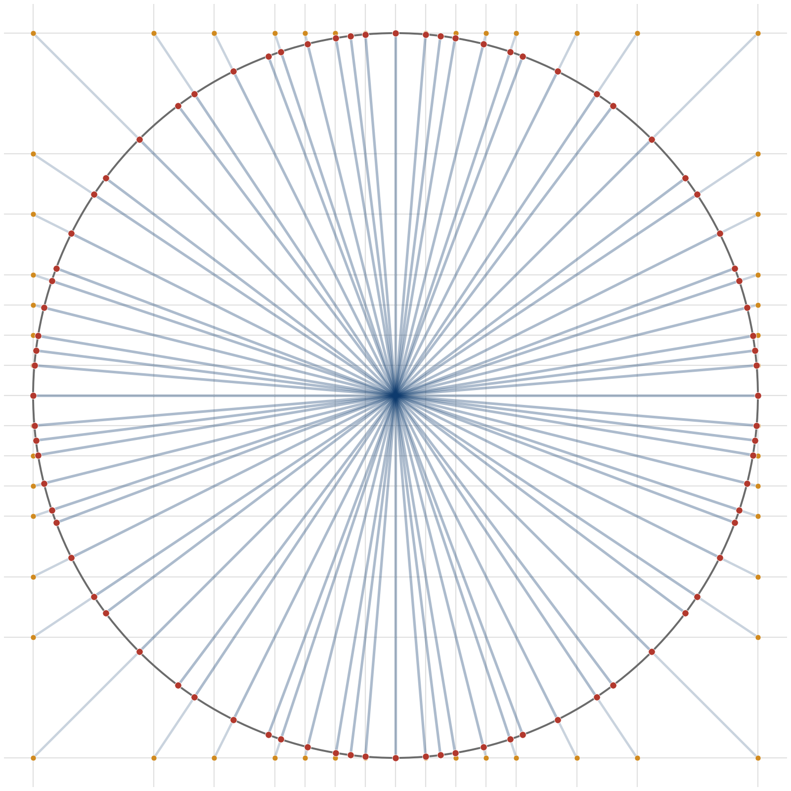
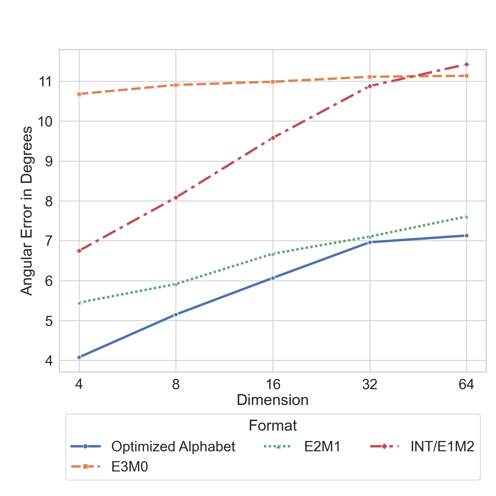

Provides open-source end-to-end Lean formal proofs of the paper's theorems on directional coverage of product-structured number codes.
Abstract
Low-precision number formats are widely used in modern machine learning systems due to their efficiency. Accurate direction representation is key to the accuracy of vector operations. This work precisely explores the extent to which the direction of a vector can be represented by selecting its scalar elements from a common finite alphabet of a given size. This is standard practice in machine learning, where low-precision significands may be narrow-width floating-point or integer values. A geometric framework is introduced for analyzing the directional coverage of such product-structured codes. This work analytically quantifies the suboptimality gap between such product-structured codes and spherical codes for the vector as a whole, in both low and asymptotically high dimensions. Furthermore, within the product code class, it is proven that the standard formats of two's complement, fixed-point, and floating-point are suboptimal, again with quantified gap, pointing to the potential to develop new scalar number formats. Such scalar alphabets are numerically optimized across multiple block dimensions for directional coverage, including the dimension used in NVIDIA's NVFP4 format. Experimental results are presented comparing the performance of standard formats and the optimized alphabet. We find that for four bits, NVIDIA's choice of E2M1 closely approximates the optimized alphabet, providing a geometric explanation for its strong performance in low-precision machine learning workloads and an analytical understanding of the link between that superiority and block size. We provide open-source formal proofs in Lean for the theorems in this work, along with the experimental code and the optimized alphabets obtained.
Problem
Low-precision number formats are widely used in machine learning, but their ability to preserve vector directions when applied element-wise is not well understood. The product structure of quantized vectors fundamentally restricts the geometry of representable directions.
Approach
A geometric framework is introduced for analyzing directional coverage of product-structured codes formed from finite scalar alphabets. The authors analytically quantify the suboptimality gap between product codes and unconstrained spherical codes in both low and high dimensions. They prove that standard formats (two's complement, fixed-point, floating-point) are suboptimal within the product code class, with quantified gaps. Scalar alphabets are numerically optimized across multiple block dimensions for directional coverage. Formal proofs of the theorems are provided in Lean.

Figure 1: The directional coverage for a product code formed from two elements in the 4-bit E2M1 format. Each intersection of the grid lines corresponds to a representable direction through the product structure, projected onto the circle as a red dot. It can be seen that the red dots are not equally spaced in angle, leading to gaps in angular coverage.
Results
For four bits, NVIDIA's E2M1 format closely approximates the numerically optimized alphabet, providing a geometric explanation for its strong performance in low-precision ML workloads. The analytical framework links E2M1's superiority to block size. Open-source Lean proofs, experimental code, and optimized alphabets are released.

Figure 2: Sampled worst-case angular error with increasing dimension. E2M1, the format used in NVFP4, comes close to the optimized alphabet.